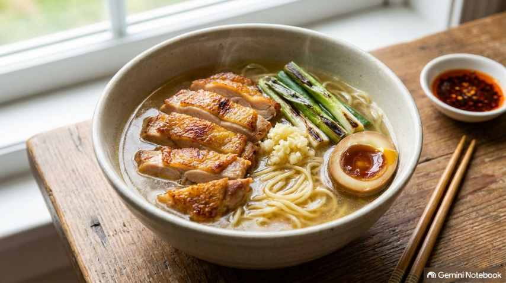

※本記事はプロモーションを含みます

鶏肉とネギをラードで炒めて出汁を抽出！日本酒で旨味を凝縮させた極上のあっさり鶏塩スープ
材料（1人前）
【具材・炒め用】
- 鶏もも肉120g（1/3枚）
- 長ネギ30g（1/3本）
- にんにく1/2片
- ラード（またはサラダ油）大さじ1
【極上鶏塩スープ】
- 日本酒100ml
- 水300ml
- 鶏ガラスープの素小さじ1.5
- 塩小さじ1/3
- オイスターソース小さじ1
- みりん風調味料小さじ1/2
- テーブルコショー少々
【麺・トッピング】
- 中華生麺1玉
- 半熟ゆで卵1個（7分半茹で）
- 刻みネギ適量
作り方
1. 『下準備とゆで卵作り』小鍋でお湯を沸かし、洗った卵を入れて7分半茹でて冷水にとり、半熟ゆで卵を作ります（このお湯は後で麺を茹でるのに再利用します）。
2. 『具材のカット』鶏もも肉は一口大の小ぶりに切り、長ネギは斜め切り、ニンニクはスライスします。
3. 『鶏肉とネギの炒め煮』小鍋にラード大さじ1を熱し、鶏もも肉、ネギ、ニンニクを入れて炒めます。鶏皮から脂（鶏油）が染み出し、ネギに美味しそうな焦げ目がつくまで炒めます。
4. 『酒煮込みとスープ完成』日本酒100mlを加え、強火で一気に煮詰めて酒の旨味と鶏出汁を凝縮させます。水分が飛んだら水300ml、鶏ガラスープの素小さじ1.5、塩小さじ1/3、オイスターソース小さじ1、みりん小さじ1/2、コショウ少々を加えてサッと煮立てます。
5. 『盛り付け』ゆで卵を作ったお湯で中華麺を硬めに茹でて湯切りし、器に盛ります。具材ごと熱々のスープを注ぎ、半熟ゆで卵と刻みネギを添えて完成です！
💡 ちょい足しメモ・備考
鶏肉とネギ・ニンニクをしっかり炒めて脂（鶏油）を出すのがスープのコクの決め手です。途中で柚子胡椒を添えて味変すると、料亭のような爽やかな香りが広がり二度楽しめます。